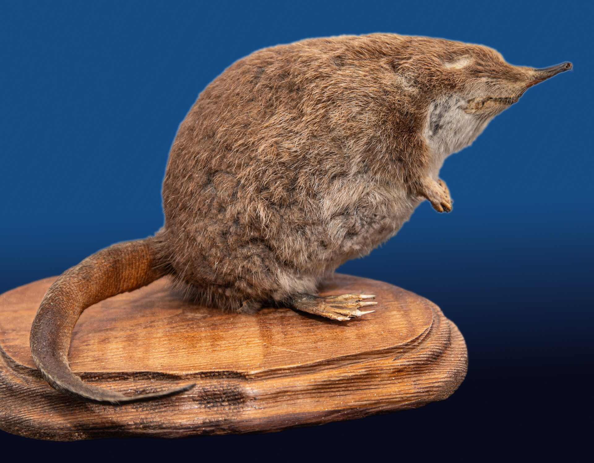
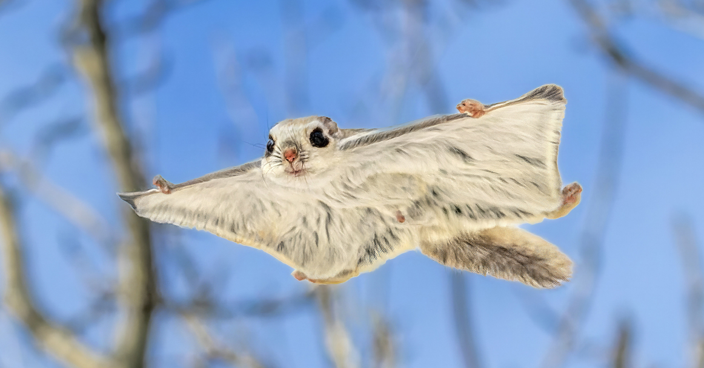
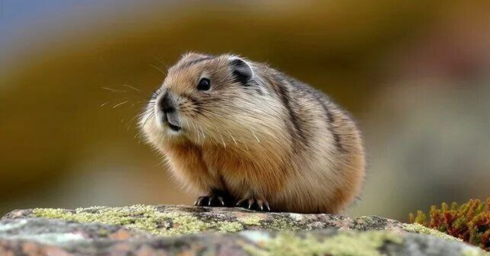

Русская выхухоль (Desmana moschata)

Русская выхухоль — небольшое млекопитающее из семейства кротовых, ведущее полуводный образ жизни. Длина тела 18–22 см, хвоста — 17–21 см, масса от 380 до 520 граммов. Тело вытянутое, голова коническая с длинным подвижным хоботком, глаза очень маленькие, наружные уши отсутствуют.
Хвост длинный, сжатый с боков, покрыт чешуйками и редкими волосками. У основания хвоста находится мускусная железа. Лапы короткие с плавательными перепонками. Мех густой, водостойкий, спина тёмно-бурая, брюхо серебристо-белое.
Обитает в бассейнах рек Днепра, Волги, Дона и Урала. Населяет пойменные водоёмы со спокойным течением и обрывистыми берегами. Активна в сумерках и ночью.
Питается водными насекомыми и их личинками, пиявками, моллюсками, мелкими ракообразными. Изредка ест мелкую рыбу, лягушек и растительную пищу. Корм добывает на дне, используя хоботок для вынюхивания.
Норы роет сама, вход в нору всегда под водой. Живёт поодиночке или парами, на зиму может собираться небольшими группами.
Основные угрозы — загрязнение и осушение водоёмов, вырубка пойменных лесов, браконьерство, случайный отлов в сетях, а также вытеснение американской норкой и ондатрой.
Занесён в Красную книгу Вологодской области как исчезающий вид, нуждающийся в особой охране.
Европейская косуля (Capreolus capreolus)

Европейская косуля — некрупный олень из семейства оленевых. Длина тела 100–135 см, высота в холке 65–85 см, масса от 20 до 35 кг. Самцы и самки внешне схожи, но самцы немного крупнее. Тело стройное, изящное, шея длинная, уши заострённые, хвост очень короткий и незаметный. Ноги тонкие с копытами, при беге косуля способна развивать скорость до 60 км/ч.
Окрас летом рыжевато-бурый с тёмной полосой вдоль спины и белым пятном на хвосте. Зимой мех становится серовато-бурым, густым и длинным. Молодые особи имеют пятнистую окраску, которая исчезает к осени. У самцов на голове развиты небольшие рога с тремя отростками, которые сбрасываются осенью и отрастают к весне.
Европейская косуля обитает в смешанных и широколиственных лесах, лесостепях, на полях и лугах, поросших кустарником. Предпочитает мозаичные ландшафты с чередованием леса и открытых пространств. Избегает глухой тайги и полностью открытых степей. Активна преимущественно в сумерках и ночью, днём отдыхает в укрытиях.
Питается растительной пищей: листьями, побегами и корой деревьев и кустарников (дуб, осина, ива, берёза, лещина), травянистыми растениями, ягодами, грибами, желудями. Зимой основной корм — веточки, почки и кора. Нуждается в питьевой воде, поэтому часто посещает водопои.
Основные угрозы — разрушение мест обитания из-за вырубки лесов и освоения земель, глубокоснежные зимы, браконьерство, гибель на дорогах и в сельскохозяйственных угодьях. Численность европейской косули восстанавливается благодаря охране, но в некоторых регионах вид остаётся редким.
Занесён в Красную книгу Вологодской области как редкий вид, нуждающийся в охране.
Летяга (Pteromys volans)

Летяга — небольшой грызун из семейства беличьих, способный к планирующему полёту. Длина тела 12–23 см, хвоста — 9–14 см, масса от 100 до 170 граммов. Между передними и задними лапами натянута кожистая перепонка, покрытая мехом. Хвост длинный и пушистый, служит рулём при планировании.
Окрас спины серебристо-серый или буровато-серый, брюхо светлое, почти белое. Мех мягкий и густой.
Летяга обитает в таёжных и смешанных лесах Евразии от Финляндии до Тихого океана. Предпочитает высокоствольные леса с обилием старых дуплистых осин и берёз. Активна в сумерках и ночью.
Питается почками, молодыми листьями, серёжками берёзы и ольхи, семенами хвойных деревьев, ягодами, грибами. При прыжке расправляет перепонки и может планировать на расстояние до 50–60 метров. Хвост помогает менять направление. На землю спускается редко.
Живёт в дуплах старых деревьев. На зиму запасов не делает, в спячку не впадает.
Основные угрозы — вырубка старовозрастных лесов, лесные пожары.
Занесён в Красную книгу Вологодской области как редкий вид, нуждающийся в охране.
Лесной лемминг (Myopus schisticolor)

Лесной лемминг — небольшой грызун из семейства хомяковых. Длина тела 8–13 см, хвоста — 1–2 см, масса от 20 до 40 граммов. Тело плотное, коренастое, голова крупная с тупой мордочкой, уши маленькие, почти скрыты в меху. Лапы короткие, когти на передних лапах длинные и изогнутые, приспособлены для рытья.
Окрас меха на спине чёрный или тёмно-серый с ржаво-коричневыми или рыжими пятнами, которые могут сливаться в сплошную полосу. Брюхо сероватое. Зимой мех становится светлее, но характерные пятна сохраняются. В отличие от многих леммингов, лесной лемминг не белеет полностью.
Лесной лемминг обитает в таёжной зоне Евразии от Скандинавии до Чукотки и Камчатки. Предпочитает старые хвойные леса с густым моховым покровом из мхов-сфагнов и кукушкина льна. Часто встречается в заболоченных участках леса. Активен круглосуточно с перерывами на отдых, зимой активность снижается.
Питается лесной лемминг почти исключительно мхами, особенно предпочитает зелёные мхи (дикранум, плеуроциум, гилокомиум). Изредка поедает листья брусники, черники, побеги кустарничков. Зимой также кормится мхами, прокладывая ходы в снегу и под землёй.
Норы устраивает в моховой подстилке или в верхних слоях почвы под корнями деревьев. Зимой строит гнёзда под снегом из мха и растительных волокон. Живёт небольшими колониями, но строгой социальной иерархии не имеет.
Основные угрозы — вырубка старых хвойных лесов, особенно с богатым моховым покровом, лесные пожары, изменение климата. Из-за скрытного образа жизни лесной лемминг изучен слабо, точных данных о численности нет.
Занесён в Красную книгу Вологодской области как уязвимый вид, нуждающийся в сохранении мест обитания.